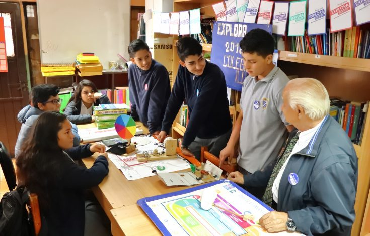
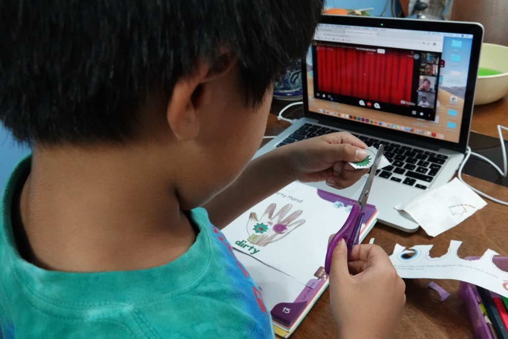
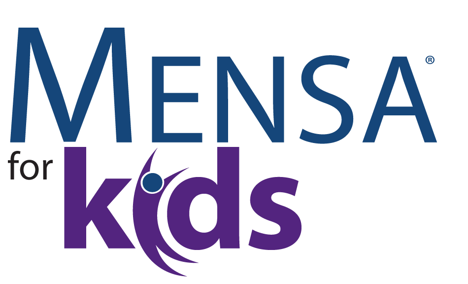
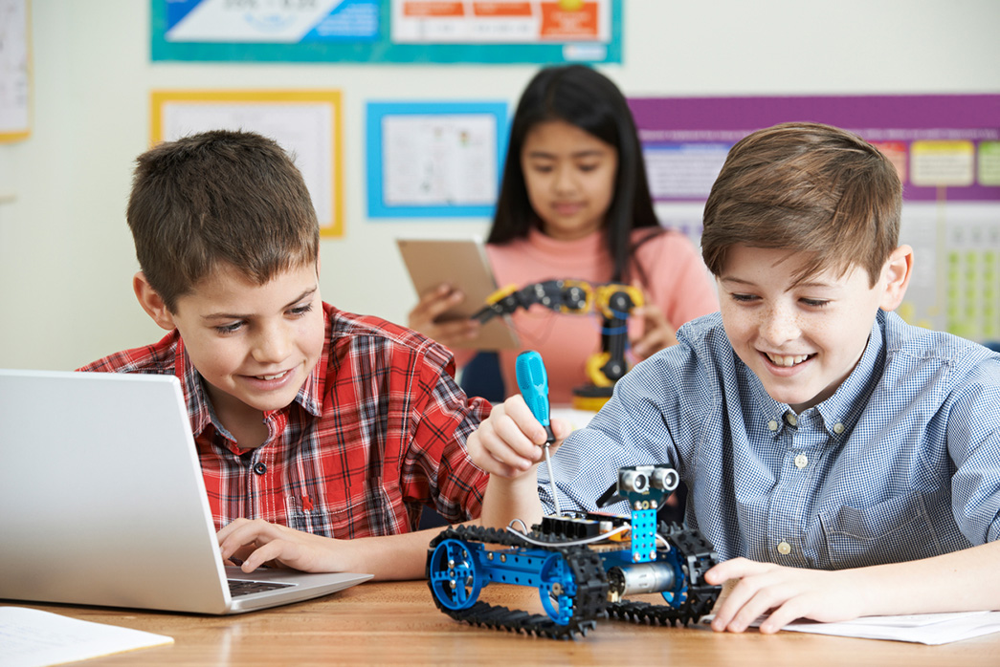

Alumnos: Feria García Isaac, Muciño Velasco Alexia Victoria
Grupo: 7ZLEINSMA 2025-2
Descubriendo Genios
Un viaje en el tiempo sobre niños con altas capacidades intelectuales.
🎯 Objetivo del Proyecto
Desarrollar una página web para brindar una herramienta que facilite a escuelas y padres en la identificación de niños con altas capacidades intelectuales, para resolver sus problemáticas personales, sociales y académicas.
🕰 1980 - Sin reconocimiento
Los niños con altas capacidades no eran identificados y enfrentaban problemas en la escuela.
Limitaciones: Falta de estudios sobre el tema y ausencia de políticas educativas.
Tecnologías: Métodos tradicionales sin herramientas digitales.
📚 1990 - Primeras iniciativas
Se inician estudios en universidades mexicanas sobre el impacto de la alta capacidad.
Limitaciones: Investigación limitada a entornos académicos sin aplicación práctica.
Tecnologías: Primeros estudios en psicopedagogía.
🔍 1995 - Primeras investigaciones
Se desarrollan pruebas en algunas escuelas para detectar niños con talento excepcional.
Limitaciones: Falta de acceso a programas en zonas rurales.
Aplicaciones: Test psicométricos básicos.

🏫 2000 - Primeros programas oficiales
Se implementan programas de educación diferenciada para niños con altas capacidades.
Limitaciones: Escasez de docentes capacitados.
Aplicaciones: Primeros cursos en línea personalizados.

📱 2010 - Plataformas digitales
Se crean apps para identificar y apoyar a niños con altas capacidades.
Limitaciones: Falta de personalización y alcance limitado.
Aplicaciones: SmartGifted, Mensa Kids.

🚀 2015 - Inteligencia Artificial en educación
Se desarrollan plataformas basadas en IA para la identificación temprana.
Limitaciones: Necesidad de mejoras en algoritmos de personalización.
Aplicaciones: CogniKid, AI-Talent.
🧠 2018 - Avances en neurociencia
Se realizan importantes descubrimientos en el campo de la neurociencia para comprender mejor el cerebro de los niños con altas capacidades.
Limitaciones: Falta de comprensión completa sobre los mecanismos cerebrales en niños superdotados.
Tecnologías: Investigación en neurociencia cognitiva, mejoras en pruebas de detección.
🌐 2020 - Programas educativos personalizados a gran escala
Se implementan programas de educación personalizada basados en el análisis de datos y el aprendizaje automático para apoyar a niños con altas capacidades en todo el mundo.
Limitaciones: Desigualdad en la distribución de recursos tecnológicos y falta de infraestructura en países en desarrollo.
Aplicaciones: Plataformas de educación basadas en IA, tutorías virtuales personalizadas.
💡 2024 - Avances en el aprendizaje autodirigido
Los niños con altas capacidades comienzan a desarrollar habilidades de aprendizaje autodirigido mediante el uso de herramientas de IA y recursos educativos interactivos.
Limitaciones: Retos para motivar a los niños a usar plataformas de manera autónoma.
Tecnologías: Plataformas de gamificación, herramientas interactivas de autoaprendizaje.

📚 Fuentes Bibliográficas
Cámara de Diputados de México. (s.f.). Altas capacidades intelectuales: Sector poco reconocido en México. Revista Pluralidad y Consenso. Recuperado el 3 de febrero de 2025, de https://comunicacionsocial.diputados.gob.mx/...
Scielo México. (2018). Las altas capacidades intelectuales en México: Un análisis desde la educación. Recuperado el 3 de febrero de 2025, de https://www.scielo.org.mx/...
Secretaría de Educación Pública (SEP). (s.f.). Educación Especial en México. Recuperado el 3 de febrero de 2025, de https://edicacionespecial.sep.gob.mx